Design Studio
Every drawing you have, reviewed by a council of five. Then two tracks: develop your master plan round by round, and start from a clean sheet keeping only the concrete, the stair and the garden and street facades. Each concept is drawn with real furniture, measured the same way, and walked through three life stages: the two of you, young children, older children.
Where the house sits

The garden faces roughly north: soft light all day and the cool north-west breeze. The street side faces south and takes the sun. Neighbours stand about 6 m away on both sides, so the side windows are for light and air, and that is where the AC units and kitchen exhaust go.
So: living, master bedroom and the suite lounge belong on the garden side; kitchen, kids rooms and entrance on the bright street side; baths, dressings, laundry and the stair in the middle, where they also keep the parents' and children's wings apart.
Five reviewers, every drawing
Five independent reviewers read the brief (docs/studio/BRIEF.md) and every drawing Daniel has: the master ground floor (C37-38 FINAL), the master first floor (proposal), KKK, Villa design 1, Daniel's own draft (v1 + v2), the architect's options 1, 2, 2.1, 2.2, 3, 4, 5, f and j, and the previous working plan. Full reports: scratch copies in the session, summarised here. Weights: use of space 25, modularity / life stages 25, flow and privacy 15, storage 10, light and air 10, buildability 10, sense of space 5.
| Reviewer | Lens |
|---|---|
| Lead architect | plan organisation, structure grid, circulation, facades |
| Interior designer / space planner | furniture fit, proportions, sightlines, Walnut & Travertine |
| Family-life & storage | three life stages, night routes, child equity, storage volume |
| MEP & climate engineer | stacks and drains, hidden split AC, hood, noise, daylight, breeze |
| Egyptian market & lifestyle | guests, privacy, resale, local habits |
Scoreboard (weighted /100)
| Drawing | Architect | Interior | Family | MEP | Market | Average |
|---|---|---|---|---|---|---|
| Master first floor (proposal) | 65 | 68 | 67 | 74 | 74 | 69.6 |
| Option f | 70 | 68.5 | 66 | 62 | 72 | 67.7 |
| Master ground floor (FINAL) | 63 | 69.5 | 63 | 70 | 70 | 67.1 |
| Daniel's draft | 64 | 65.5 | 64 | 72 | 68 | 66.7 |
| Option 2.2 | 69 | 65 | 62 | 60 | 69 | 65.0 |
| Option 2 | 68 | 62.5 | 61 | 58 | 67 | 63.3 |
| Option 3 | 59 | 59 | 63 | 62 | 65 | 61.6 |
| KKK | 60 | 57.5 | 63 | 60 | 67 | 61.5 |
| Option 1 | 59 | 56.5 | 60 | 56 | 65 | 59.3 |
| Option 5 | 60 | 55 | 60 | 54 | 58 | 57.4 |
| Option j | 58 | 52 | 57 | 58 | 61 | 57.2 |
| Option 4 | 55 | 54 | 58 | 55 | 59 | 56.2 |
| Villa design 1 | 54 | 51.5 | 52 | 56 | 55 | 53.7 |
Your master first floor tops the board: it is the only drawing with the whole couple → young family → older children path and no building work between stages. Villa design 1 has the best sense of space of all (9/10 from the interior designer) and the lowest modularity (3/10): keep its curves, not its plan. Options 4 and 5 lose because the master bedroom has no bathroom of its own.
Where all five agree (fixed in Track 1, round 1)
- Kitchen: drawn closed (reached only through the dining room), no movable partition to the hall, no breakfast seat, and the pantry has the only street window. → island with stools, hall access, kitchen takes the window.
- Entry: no vestibule, no 1.8 m coats-and-shoes cupboard, stair in full view of the salon. → vestibule + glazed door.
- Salon: ≈ 50 m² in one undivided room (target 24–32) with no TV wall. → TV living + garden lounge.
- Master bath reads as a tub in the drawings; the brief says shower. → walk-in shower + double basin.
- Laundry 1.9 m², no counter, no linen, no drying. → bigger, machines side by side, linen.
- Kids bath door from a lobby, not from inside a kids room. → kids wing door + inside doors.
- Storage short on linen, coats, broom cupboards; pantry over-sized.
Where they split
- Prayer room: keep it closed (brief) vs an icon alcove that frees space for a laundry with a window (family, interior).
- Ground-floor flexible room for parents / after a birth / old age: three of five want it; the brief says no guest bedroom.
- Separate his + hers dressing (brief) vs one walk-through dressing with more hanging metres (interior, architect).
- Kids bath tub (Daniel kept it) vs shower + twin basin (architect, family for teenagers). → All of these are in T1-X "Challenge the brief", kept apart from the main concepts as Daniel asked.
Blind spots the engineer added
- The kitchenette sink in the corridor has no stack nearby: move it onto a wet wall (done in Track 1: back-to-back with the laundry on the old ensuite stack E1).
- Survey the three first-floor stacks W1, W2, E1 and where E1 lands downstairs before anything is built.
- Hood: vent to the west side facade away from the first-floor windows, with make-up air when the kitchen is closed.
- AC: slim ducted units in the service ceilings (dressings, baths, corridor, pantry); outdoor units on pads in the side setbacks, one group per side.
Ideas worth stealing (and where they went)
- Option f: washer + dryer side by side next to a shower room on one wet wall → Track 1 utility lobby.
- Option 2.2: a linen room / cupboard off the corridor → corridor linen in Track 1.
- Daniel's draft v2: a passage with his dressing along it → round 2 "suite gallery".
- Iteration 7: hidden coat cupboard, store with an outside door → kept.
- Villa design 1: curves where people walk → T2-C "Soft courtyard".
- KKK: kitchenette behind walnut doors → utility lobby kitchenette.
The concepts in numbers
| Concept | Ground circ. | First circ. | Wardrobe | Shelves, linen, pantry | Stage 3 per child | Score |
|---|---|---|---|---|---|---|
| T0 Master plan as drawn (baseline) | 9.8 % | 14.0 % | 10.0 m | 3.9 m | 17.1 m² · via 2 room(s) 14.3 m² · via 1 room(s) 16.2 m² · own door | 64.0 |
| T1-R1 Master plan, round 1 — the council's fixes | 16.6 % | 15.3 % | 11.9 m | 15.4 m | 17.8 m² · via 1 room(s) 14.2 m² · own door 13.8 m² · own door | 72.0 |
| T1-R2 Master plan, round 2 — the suite and the stair top | 16.6 % | 11.7 % | 13.6 m | 15.0 m | 17.8 m² · via 1 room(s) 14.2 m² · own door 12.4 m² · own door | 76.5 |
| T1-R2W Round 2 + guest WC with an outside door | 16.6 % | 11.7 % | 13.6 m | 15.0 m | 17.8 m² · via 1 room(s) 14.2 m² · own door 12.4 m² · own door | 75.5 |
| T1-R3 Master plan, round 3 — off the grid where it pays | 16.6 % | 11.8 % | 13.6 m | 15.3 m | 17.8 m² · via 1 room(s) 14.2 m² · own door 12.4 m² · own door | 78.5 |
| T1-X Challenge the brief | 16.5 % | 14.6 % | 14.3 m | 13.8 m | 17.8 m² · via 1 room(s) 14.2 m² · own door 13.9 m² · own door 11.2 m² · via 3 room(s) | 76.0 |
| T2-A Family side · Guest side | 17.7 % | 14.0 % | 12.7 m | 16.0 m | 15.5 m² · own door 11.2 m² · own door 14.2 m² · own door | 78.0 |
Scores: the studio's weighted scorecard (BRIEF section 6). Circulation target ≤ 15 %.
T0 Master plan as drawn (baseline)
Your current master drawing (C37-38 FINAL + proposal, 2026-10-18), redrawn in the studio format so every concept is measured the same way.
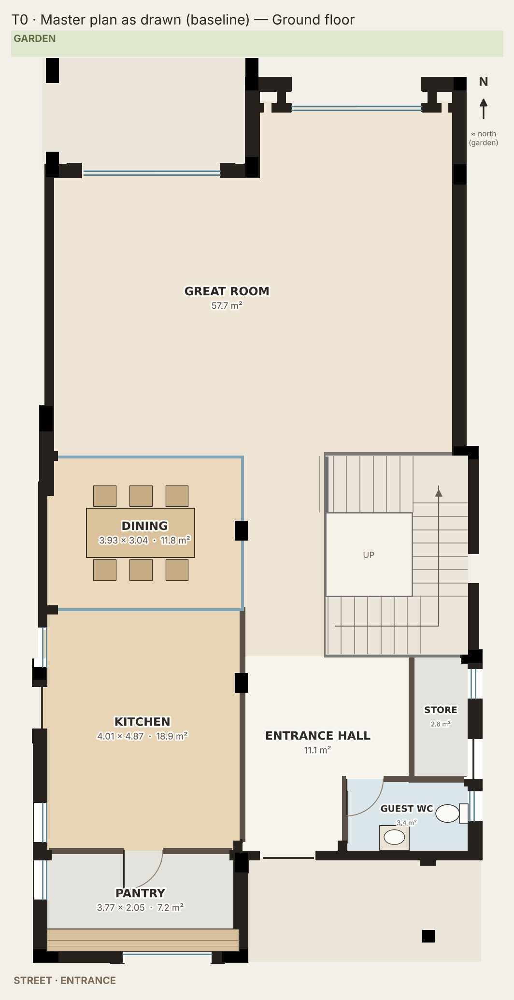
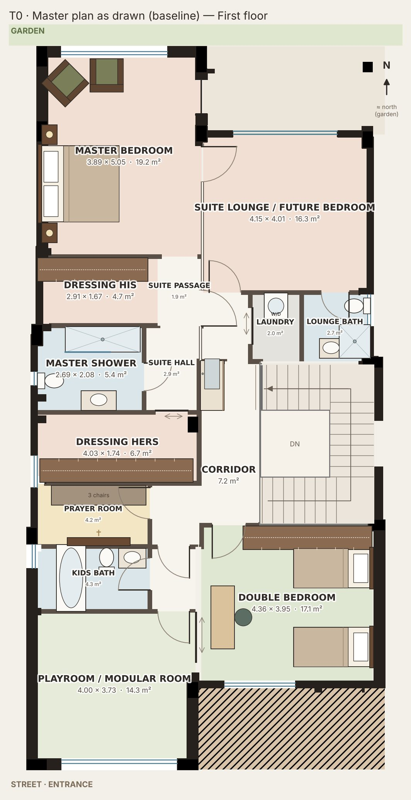
- Ground: kitchen + pantry on the street side of the west bay, dining between two movable glass walls, one 50 m² great room, entrance hall with guest WC and an outside-access store.
- First: master suite in the garden half (bedroom, his + hers dressing, shower room, suite lounge with its own bath), kids wing in the street half (double room, playroom, kids bath off a lobby), prayer room and kitchenette mid-house.
Stage 3, per child: Double bedroom 17.1 m²/child (via 2 room(s)) · Playroom / modular room 14.3 m²/child (via 1 room(s)) · Suite lounge / future bedroom 16.2 m²/child (own door)
Your master as drawn: the only plan with the whole 15-year path, but a closed kitchen, no entry sequence, a 50 m² salon and thin storage.
T1-R1 Master plan, round 1 — the council's fixes
Same bones as your master drawing. Every fix the five reviewers agreed on, and nothing else.
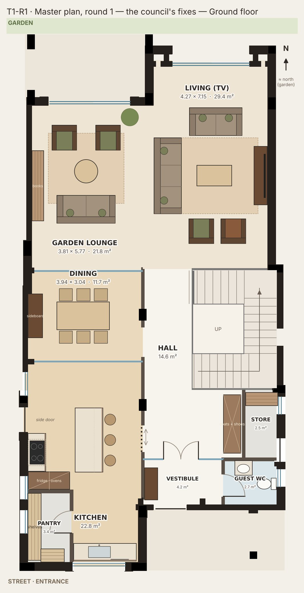
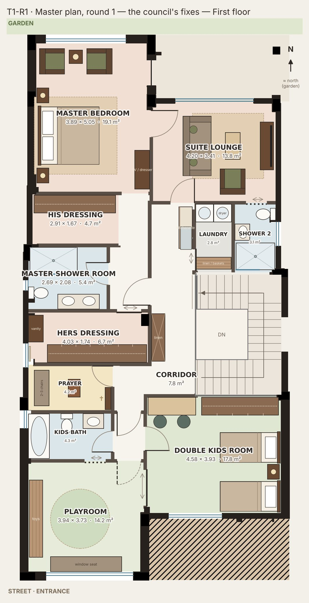
- Kitchen gets the street window and a 3-stool island; pantry becomes a 3.4 m² walk-in; a pocket door from the hall makes the shopping route 6 steps.
- A real entry sequence: vestibule with a glazed door, guest WC off the vestibule, 2.2 m coats-and-shoes wall in the hall.
- The 50 m² salon becomes two rooms in one: TV living for 7 in the east bay, a garden lounge by the terrace in the west bay.
- Upstairs: hotel suite door facing the top of the stair; walk-in shower with double basin (no tub); kids wing behind one door with the bath opening from inside the playroom.
- Utility lobby at the stair top: kitchenette back-to-back with a side-by-side laundry on the old ensuite stack; suite lounge keeps its own lockable door and a shower room for stage 3.
What changed
- Pantry 7.1 → 3.4 m²; kitchen window regained.
- Kitchen ↔ hall: new 0.9 m pocket door. Hall ↔ dining: new 1.0 m opening.
- Vestibule + glazed double door; guest WC door moved into the vestibule.
- Master shower room: tub out, 1.6 m walk-in + double basin.
- Laundry 1.9 → 2.7 m², machines side by side; kitchenette moved off the corridor onto the laundry's wet wall.
- Kids wing door; double room enters from the kids lobby; kids bath pocket door from the playroom; corridor linen cupboard 1.6 m.
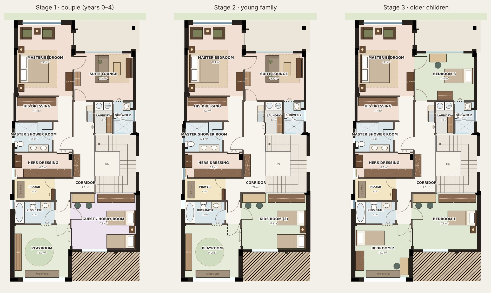
Stage 3, per child: Double kids room 17.8 m²/child (via 1 room(s)) · Playroom 14.2 m²/child (own door) · Suite lounge 13.8 m²/child (own door)
Fixes every point the council agreed on without touching the bones: kitchen, entry, salon zones, shower, laundry, kids wing door.
T1-R2 Master plan, round 2 — the suite and the stair top
Round 1 plus a real hotel suite: one door, a dressing gallery, a windowed shower room, and twice the hanging space.
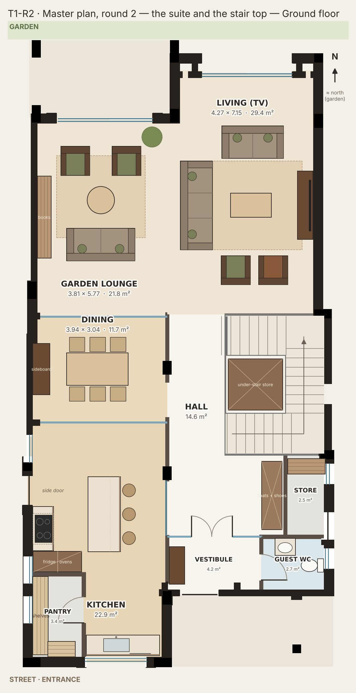
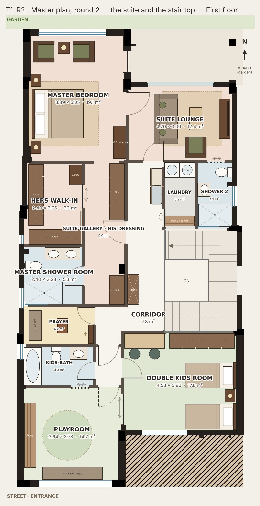
- Suite door straight ahead as you reach the top of the stair. Inside: his dressing gallery (3.4 m) leading to the bedroom, hers walk-in (4.7 m) behind a sliding door, shower room with its own window.
- Kitchen opens to the hall through a 1.6 m sliding glass wall (closed for guests and frying, open for family life), plus the glass walls to the dining that you already have.
- Stair top becomes the family utility heart: kitchenette, a 3.1 m² laundry with machines side by side, and the lounge's own door — all outside the suite.
- Suite lounge 13 m² with its own shower room: a private sitting room now, a bedroom with an ensuite at stage 3.
- Kids wing unchanged from round 1: one wing door, hidden playroom door, bath reachable from inside the playroom.
What changed
- Suite rebuilt: dressing gallery + hers walk-in + shower room in the old his / shower / hers strip; suite hall and passage folded into the gallery (1.2 m² less corridor).
- Hanging space: his 2.75 → 3.4 m, hers 3.35 → 4.7 m. Master shower room 5.4 → 5.3 m² but with a window.
- Kitchen ↔ hall: 0.9 m pocket door → 1.6 m sliding glass wall.
- Laundry 2.7 → 3.1 m², shower 2 grows; suite lounge 13.8 → 13.0 m².
- Under-stair store fitted in the stair well footprint (ground).
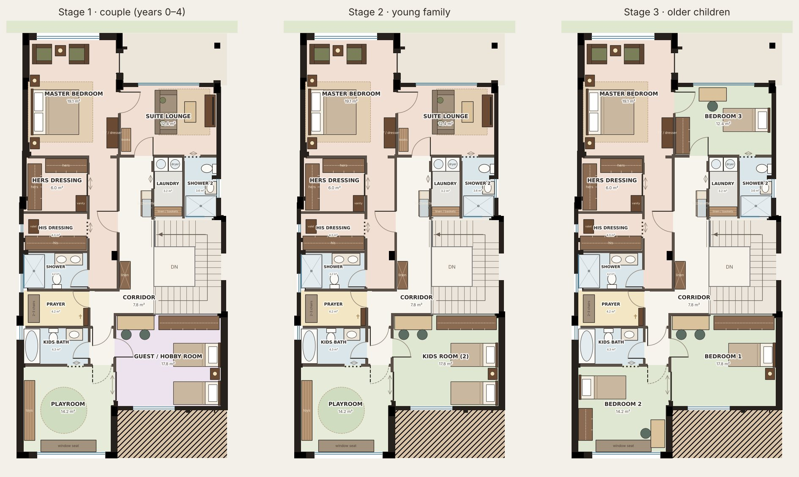
Stage 3, per child: Double kids room 17.8 m²/child (via 1 room(s)) · Playroom 14.2 m²/child (own door) · Suite lounge 12.4 m²/child (own door)
The suite becomes a real hotel sequence with almost twice the hanging space and a windowed shower; utility heart at the stair top.
T1-R2W Round 2 + guest WC with an outside door
Daniel's variant: the guest WC opens both to the vestibule and straight to the side yard, for garden and pool days.
- The east side window of the guest WC becomes a 0.8 m outside door onto the side yard, the path between the street and the garden.
- Garden guests, children playing outside and the gardener use the WC without walking through the house or the travertine floors.
- Inside door from the vestibule stays, so guests at a dinner still use it without going outside.
- Both doors lock from inside; the room is re-planned so neither door swings into the WC or the basin.
- Everything else is round 2.
Changes vs round 2
- Guest WC: east window replaced by an outside door (SIDE facade: needs the compound's approval, like the store door).
- WC moved to the street-side wall, basin to the hall-side wall; room stays 2.7 m².
Notes
- Compound request: guest WC east window (Y -7.20…-6.60) becomes a door Y -7.25…-6.45.

Stage 3, per child: Double kids room 17.8 m²/child (via 1 room(s)) · Playroom 14.2 m²/child (own door) · Suite lounge 12.4 m²/child (own door)
Round 2 with the garden-access guest WC: great for garden days, costs one side-facade request.
T1-R3 Master plan, round 3 — off the grid where it pays
Round 2, with the grid broken in the three places where a 45° line creates space out of nothing.
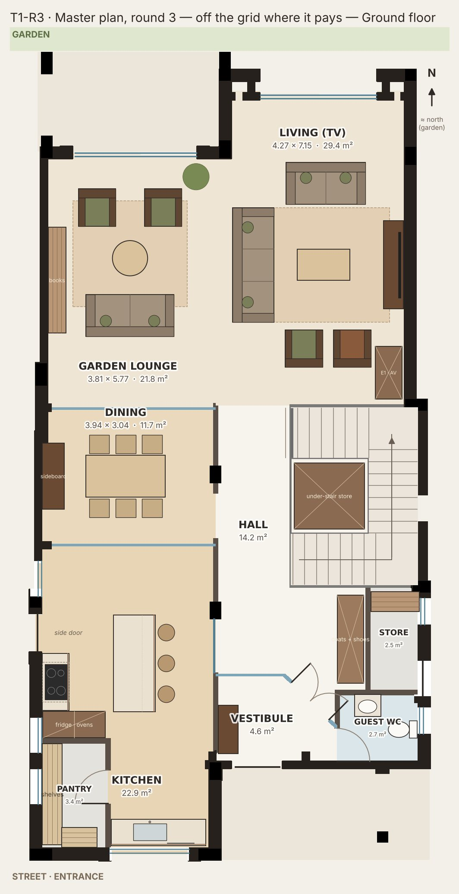
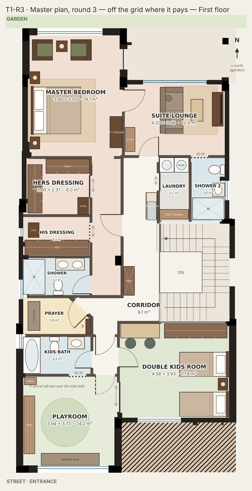
- Entrance: the vestibule's glass wall turns 45°, so the front door opens onto a diagonal view of the hall, the stair and the garden beyond; guests are steered to the living and the WC, and the coat wall gains a full 2 m run.
- Upstairs junction: the prayer room's corner is cut at 45°. Its door now faces you as you turn from the stair, the corridor corner widens into a small landing, and the icon wall keeps a clean east wall.
- Secret den: the kids bath ceiling drops to 2.3 m (it needs a service void anyway) and the 0.85 m above becomes a hidden loft den reached by a ladder in the playroom — a room that costs no floor area.
- The E1 drain stack is wrapped into a walnut AV column in the living room instead of a boxed-out corner.
- Everything that worked in round 2 stays: one suite door, dressing gallery, hers walk-in, windowed shower room, utility lobby, lockable lounge.
Changes vs round 2
- Vestibule: straight glass screen → 45° glazed wall with a 1.2 m double door; guest WC door slid to the street end of the vestibule.
- Kitchen ↔ hall glass slider re-centred (1.2 m) clear of the new vestibule.
- Prayer room: north-east corner cut at 45° with the door on the diagonal (4.2 → 4.0 m²); corridor junction +0.2 m².
- Loft den over the kids bath (≈ 2.9 × 1.5 m, 0.85 m high) + ladder; walnut column around the E1 stack downstairs.
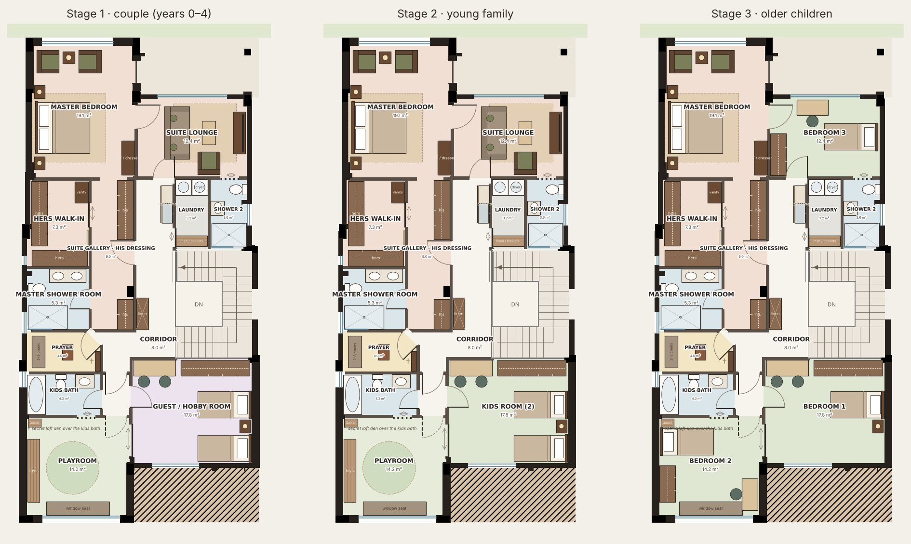
Stage 3, per child: Double kids room 17.8 m²/child (via 1 room(s)) · Playroom 14.2 m²/child (own door) · Suite lounge 12.4 m²/child (own door)
Round 2 plus three 45° moves that make the entrance and the upstairs junction generous, and a secret loft den that costs no floor.
T1-X Challenge the brief
T1-R1 plus the points most of the council pushed back on. Judge each alone; any can go back to the brief.
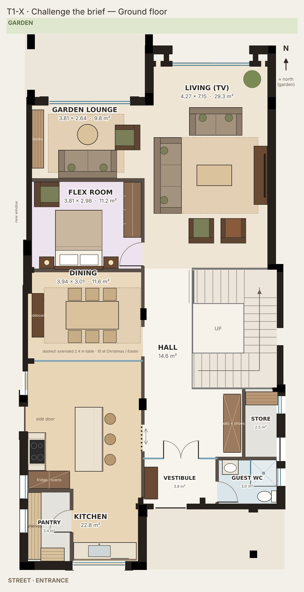
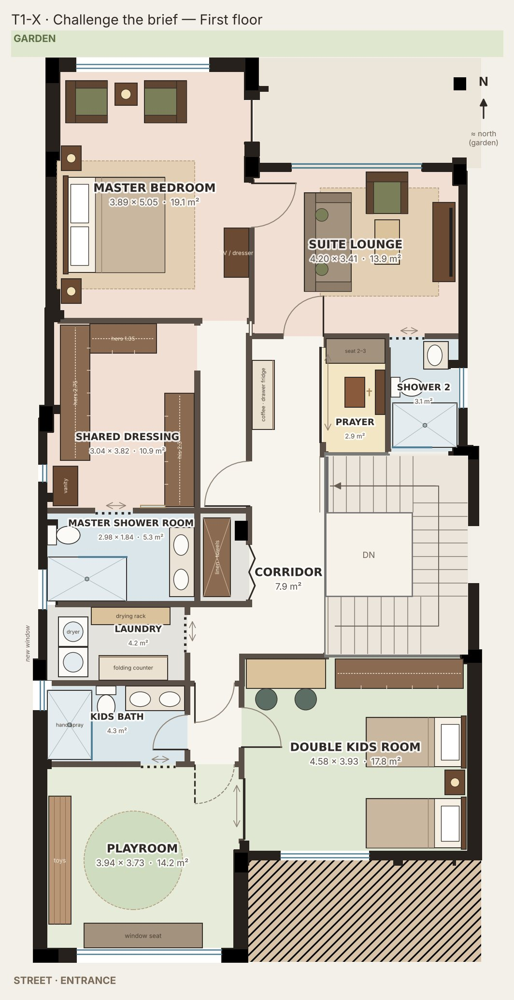
- Ground flex room 11.2 m² (door, queen bed, wardrobe): a parent after a birth or surgery, a grandparent, you two in old age; a quiet room otherwise. Costs most of the garden lounge (21.8 → 9.8 m²).
- Guest WC gets a 0.9 × 0.9 shower (2.7 → 3.0 m²) for long stays. It is 3 rooms from the flex room: fine for a guest, not a wheelchair.
- Dining: table for 6 daily, extends to 2.4 m for 10 at Christmas and Easter (dashed). No extra floor; tight to the wall on feast days.
- One walk-through dressing (bed → dressing → shower): 6.75 m of wardrobe vs 6.1 m (hers 4.1, his 2.65), one wall and two doors fewer. You lose two closable rooms.
- Kids bath: 0.9 × 1.4 shower with hand spray + 1.2 m twin basin, no tub. Faster mornings; babies need a baby tub.
- Laundry takes the prayer slot on the kids-bath stack: window, drying rack, 2.8 → 4.2 m². Prayer becomes an icon alcove at the landing; kitchenette loses its sink.
Challenges vs the brief
- 1 · Flex room +11.2 m² from the garden lounge (−12.0 m²); new west window.
- 1 · Guest WC +0.3 m² with shower (vestibule wall moves 0.2 m).
- 2 · Dining 11.6 m² unchanged; extending table 1.8 → 2.4 m (6 → 10).
- 3 · His 4.75 + hers 6.66 → shared dressing 10.85 m²; wardrobe +0.65 m; new 1.6 m² linen closet.
- 4 · Kids bath 4.3 m² unchanged: tub → 0.9 × 1.4 shower, twin basin.
- 5 · Laundry +1.4 m² with window + drying rack; kitchenette sink removed.
- 6 · Prayer room 4.2 m² → icon alcove 2.9 m² (−1.3 m²); frees the slot for the laundry.
Notes
- Compound request 1 (ground, west facade): new window ≈ 0.8 m wide at Y +1.8…+2.6 for the flex room.
- Compound request 2 (first, west facade): new window ≈ 0.6 m wide at Y −3.9…−3.3 for the laundry (beside the existing high kids-bath window).
- Wet points: laundry moves from the landing to the W2 stack beside the kids bath; kitchenette sink deleted; guest WC gains a shower in its existing drain zone; master and lounge showers stay put.
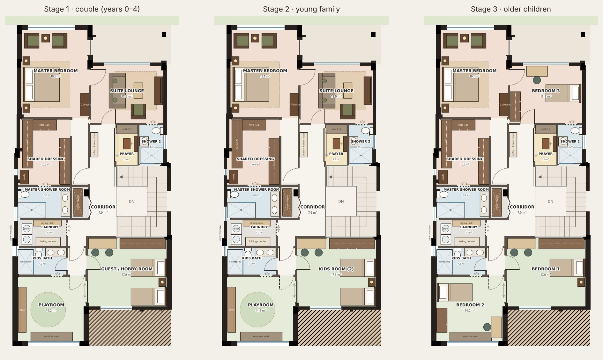
Stage 3, per child: Double kids room 17.8 m²/child (via 1 room(s)) · Playroom 14.2 m²/child (own door) · Suite lounge 13.9 m²/child (own door) · Flex room 11.2 m²/child (via 3 room(s))
Wins a ground-floor flex room, a laundry with a window and more wardrobe, but shrinks the garden lounge and needs two new side windows.
T2-A Family side · Guest side
The house splits lengthwise: the family lives down the west bay, guests are received in the east bay, and one wide screen joins or separates them.
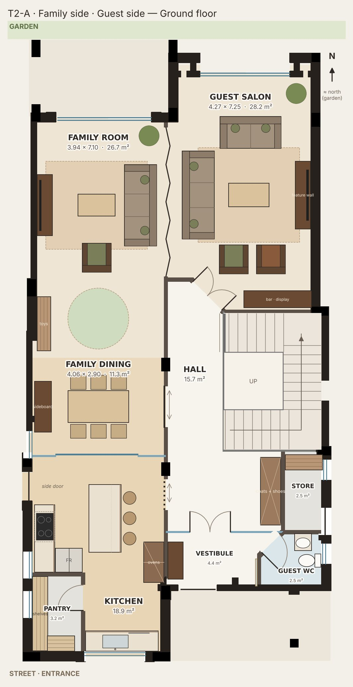
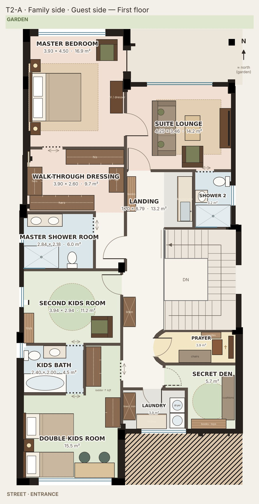
- Two living rooms that close: a 27 m² family room (TV + play, terrace) and a 28 m² guest salon for 7 (garden slider). A 4.4 m walnut folding screen opens them into one 55 m² room for Christmas.
- The cook sees the whole family side: 3-stool island, hood on the west wall, glass slider to the dining; groceries come in by the west side door, never past guests.
- A 45° portal ends the hall and turns guests diagonally toward the garden; the guest WC door hides on a 45° wall in the vestibule.
- Parents own the west bay behind one door: shower room (double basin) → diagonal walk-through dressing (hers L, his L) → king bedroom on the garden.
- True Jack-and-Jill kids bath on W2. Stage 3: rooms of 15.5 / 11.2 / 14.2 m², each with its own bath door.
- Space out of nothing: a curved chapel front for the prayer room facing the real east wall, a secret den behind a flush panel, a sleep-over loft over the kids bath.
Big moves vs the master plan
- Ground: kitchen → dining → family room in the west bay; the 50 m² salon becomes a closable 28 m² guest salon.
- Folding screen on the column line; glass slider kitchen ↔ dining; 45° hall portal and 45° guest WC door.
- First: linear suite with one diagonal dressing; lounge keeps shower on E1 + lockable landing door.
- Kids bath between the kids rooms; laundry with street window; chapel + secret den south of the stair.
Notes
- Sleep-over loft over the kids bath (2.6 × 2.0 m, 0.9 m headroom) on a timber deck; ladder in the double room's wardrobe lobby.
- Secret den has no window: an east-side window at Y −7.2…−6.6 (or a high vent) to be raised in the side-window negotiation.
- Laundry waste runs ≈0.8 m east to a new stack in the guest-WC wall below; extract to the east facade.
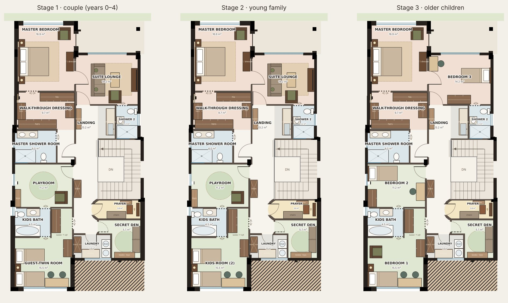
Stage 3, per child: Double kids room 15.5 m²/child (own door) · Second kids room 11.2 m²/child (own door) · Suite lounge 14.2 m²/child (own door)
Two living rooms that close or join (family side + guest salon), a true Jack-and-Jill kids bath, a secret den and a curved chapel; costs a new short stack for the laundry and a den window request.